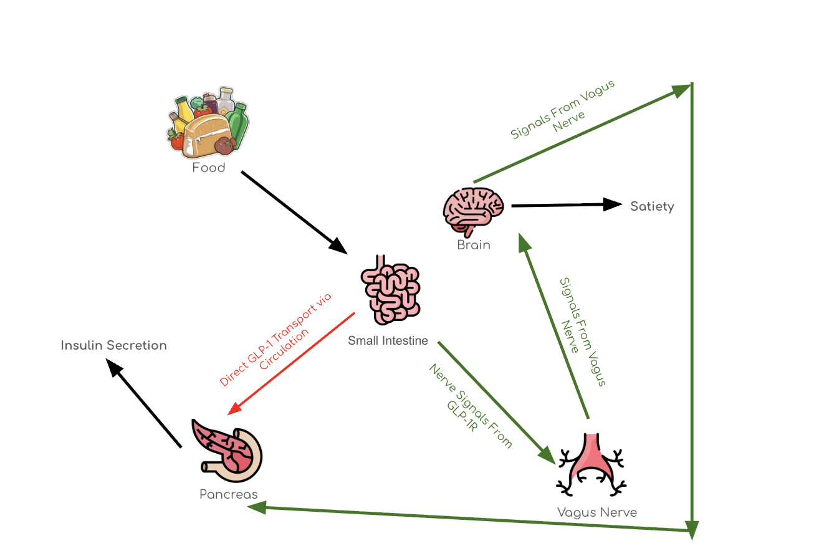
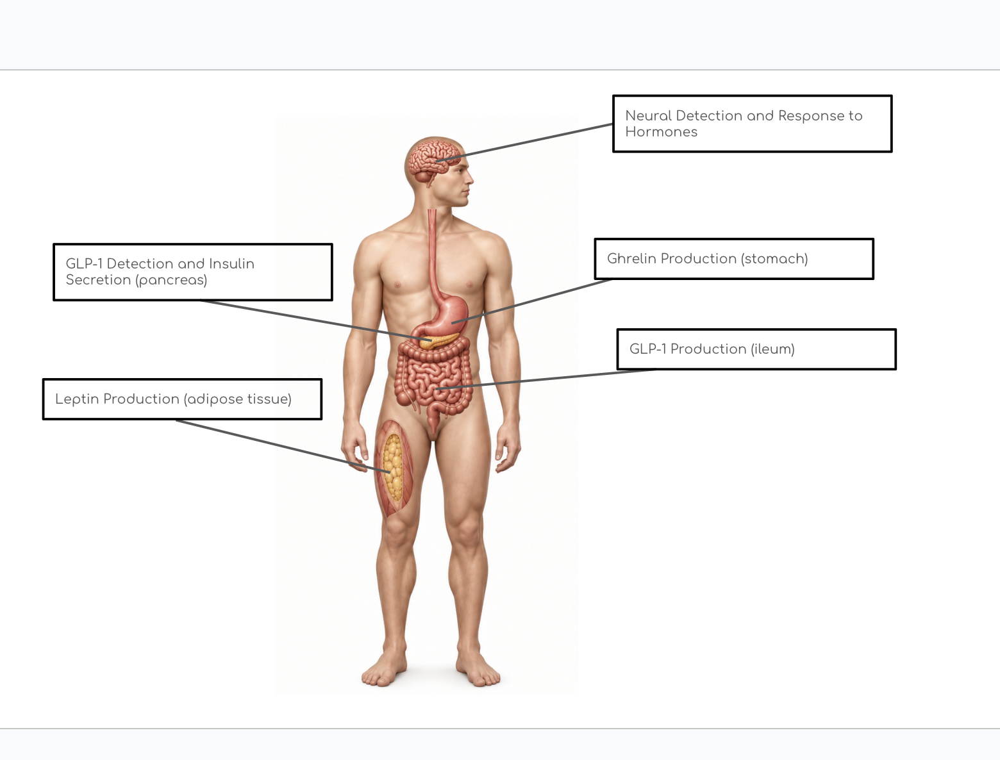
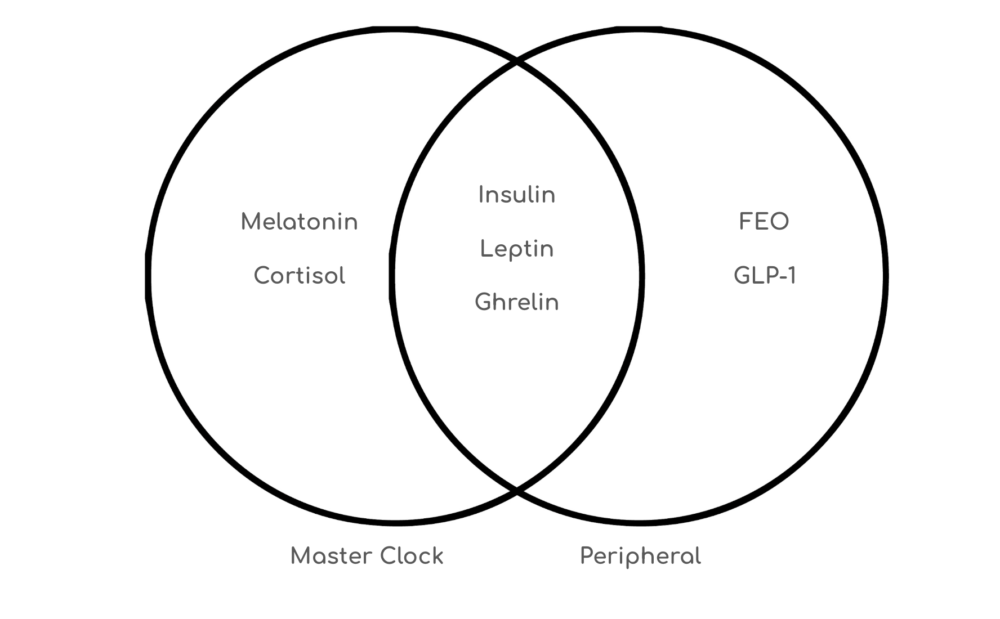
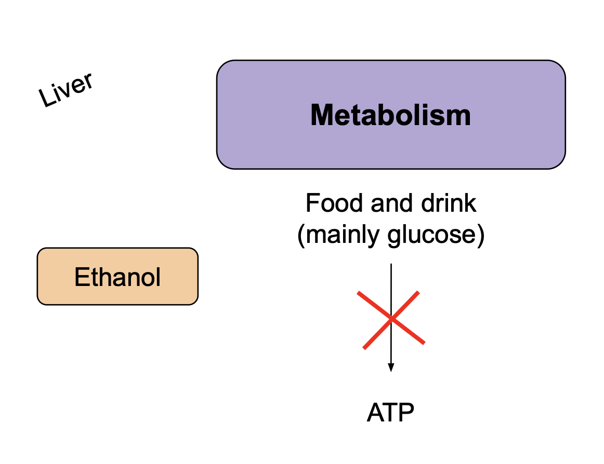
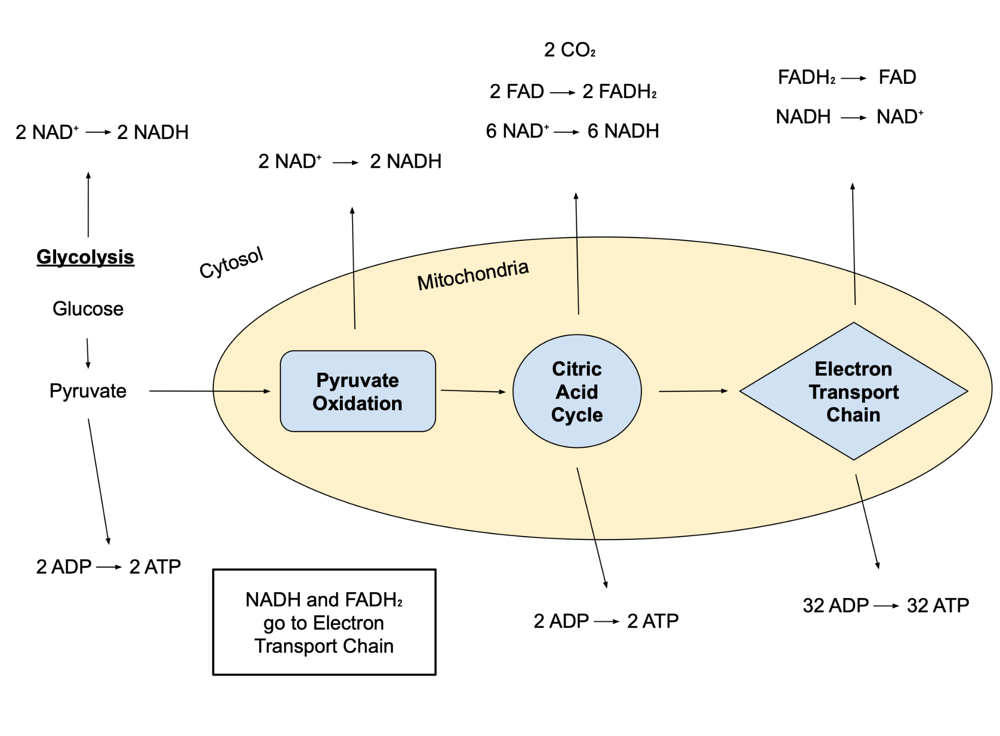
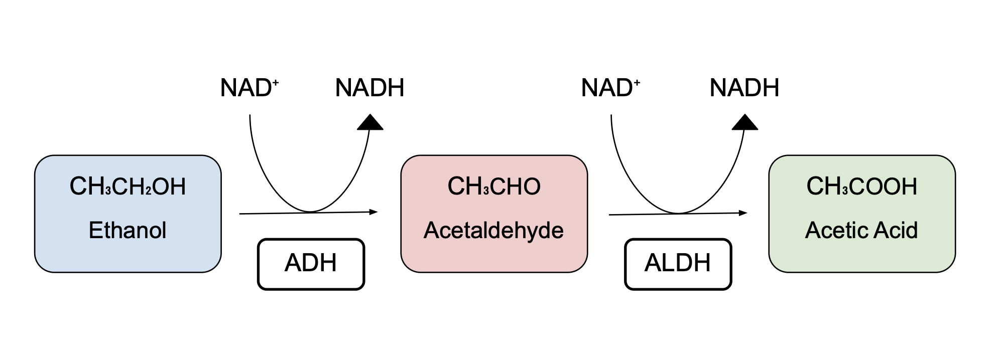

CONTRIBUTORS
- Clara Davis
- Will
Name: Will
Chapter: Meal Timing and the Circadian Rhythm
Learning objectives:
- Explain the relationship between the major processes of the circadian rhythm and meal timing.
- Identify the key zeitgebers (entrainment factors) of the hunger cycle and explain the mechanisms in which they function.
- Explain the leptin/ghrelin cycle and how it connects to other hormones and nutrients that are processed in various parts of the digestive tract.
- Predict the likely case-by-case affect(s) of circadian rhythm dysregulation and hormone dysregulation on the hunger cycle.
- Interpret data regarding two species in order to compare and contrast entrainment factors and patterns regarding their meal timing.
Name: Clara Davis
Chapter: Alcohol’s Effect on the Metabolic Cycle
Learning objectives:
- Learning Objective 1: list the biological steps of metabolism
- Remember
- Possible supplemental tie-in: How would the depletion of ADP affect metabolism?
- Learning Objective 2: Analyze alcohol vs metabolic circadian cycle graphs
- Analyze
- How is the metabolic system affected by the differing concentration of NADH?
- Learning Objective 3: Present hypothesis explaining the effect of alcohol on production of ATP.
- Evaluate
- If alcohol is consumed, how is the production of ATP affected?
- Learning Objective 4: Describe how liver damage is caused in an unstable molecular metabolic cycle
- Understand
- Explain the biological pathway if liver damage is caused by alcohol
- Learning Objective 5: How does unstable metabolism affect other systems in the body?
Sections:
The basics of routine-based meal timing
- Food and Time of Day as a Zeitgeber
- Hunger Entrainment
- Basics of Hunger Hormones
Hormones and hunger signaling
- Leptin and Ghrelin - a Closer Look
- Additional Hormones (cortisol melatonin, GLP-1, gut microbiome byproducts)
- Food entrainable oscillator (FEO) and Peripheral Clocks
- Nervous System: SCN, AgRP/NPY neurons, POMC neurons, and gut-brain axis
- Insulin sensitivity throughout the day
Rhythm disruption and health implications
- Conflicting zeitgebers
- Obesity, Diabetes, and Eating Disorders - a Hormonal View
- GLP-1 Receptor Agonists
- Social Jetlag and Shift Work
- Night Eating Syndrome
- Hunger and Sleep
Comparative Chronobiology of Hunger
- Human
- Mammalian
- Non-mamilian
- Unicellular Organisms
Introduction to Metabolism
- Define
- Catabolism vs anabolism - ATP
Metabolic Cycle through Molecular Biology
- Molecular Biology
- Four Main Stages
Circadian Rhythm of Metabolism
- Control through circadian rhythms
- Control through metabolism
Alcohol Breakdown through Molecular Biology
- Ethanol catabolism
- Biological pathway
The Issues Alcohol Causes in the Metabolic Cycle
- Build-up of NADH
- Slowed cycles
- Drop in blood sugar
- Less ATP production
Alcohol’s Effect on Metabolism’s Circadian Rhythm
- Liver’s internal clock
- Sleep-wake cycle impaired
- Body temperature
Long-Term Health Effects
- Liver harmed
- Fat accumulation
- Weakened organs
Vocab:
Grhelin: A peptide hormone responsible for regulating energy intake and expenditure. Ghrelin synthesis in the body rises as the stomach empties and energy availability is low. The peptide also inhibits insulin secretion and promotes glucagon in order to increase blood sugar to provide energy to cells.
Leptin: A peptide hormone responsible for regulating energy intake and expenditure. Leptin is produced by adipose (fat) cells when levels of stored fat are high. Leptin also promotes usage of fat for energy.
Gut Microbiome: The ecosystem of microbial life (prokaryotes such as bacteria and archea) which can consist of both beneficial and pathogenic microorganisms inside of the digestive tract.
Zeitgeber: Any entertainment factor for the circadian clock. Examples include light exposure, food intake, and wake/sleep times.
Shift Work: The process of working at abnormal times such as night shifts or early morning shifts.
Metabolism: The process of breaking down energy in a cycle
ATP: A molecule that stores and transports energy in the cell
Citations:
Young ER, Jialal I. Biochemistry, Ghrelin. [Updated 2023 Jul 17]. In: StatPearls [Internet]. Treasure Island (FL): StatPearls Publishing; 2023 Jan-. Available from:
https://www.ncbi.nlm.nih.gov/books/NBK547692/
Dornbush S, Aeddula NR. Physiology, Leptin. [Updated 2023 Apr 10]. In: StatPearls [Internet]. Treasure Island (FL): StatPearls Publishing; 2023 Jan-. Available from:
https://www.ncbi.nlm.nih.gov/books/NBK537038/
Zeng Y, Wu Y, Zhang Q, Xiao X. Crosstalk between glucagon-like peptide 1 and gut microbiota in metabolic diseases. mBio. 2024 Jan 16;15(1):e0203223. doi: 10.1128/mbio.02032-23. Epub 2023 Dec 6. PMID: 38055342; PMCID: PMC10790698.
Wehrens SMT, Christou S, Isherwood C, Middleton B, Gibbs MA, Archer SN, Skene DJ, Johnston JD. Meal Timing Regulates the Human Circadian System. Curr Biol. 2017 Jun 19;27(12):1768-1775.e3. doi: 10.1016/j.cub.2017.04.059. Epub 2017 Jun 1. PMID: 28578930; PMCID: PMC5483233
Yeung AY, Tadi P. Physiology, Obesity Neurohormonal Appetite And Satiety Control. [Updated 2023 Jan 3]. In: StatPearls [Internet]. Treasure Island (FL): StatPearls Publishing; 2026 Jan-. Available from: https://www.ncbi.nlm.nih.gov/books/NBK555906/Rodin J. Insulin levels, hunger, and food intake: an example of feedback loops in body weight regulation. Health Psychol. 1985;4(1):1-24. doi: 10.1037//0278-6133.4.1.1. PMID: 3894001.
Di Rosa V, Frigato E, Negrini P ...
Sporadic feeding regulates robust food entrainable circadian clocks in blind cavefish iScience, 2024; 27
Mistlberger RE. Food-anticipatory circadian rhythms: concepts and methods. Eur J Neurosci. 2009 Nov;30(9):1718-29. doi: 10.1111/j.1460-9568.2009.06965.x. Epub 2009 Oct 28. PMID: 19878279.
Liu C, Liu Y, Xin Y, Wang Y. Circadian secretion rhythm of GLP-1 and its influencing factors. Front Endocrinol (Lausanne). 2022 Dec 2;13:991397. doi: 10.3389/fendo.2022.991397. PMID: 36531506; PMCID: PMC9755352.
Boersma, P., Villarroel, M. A., & Vahratian, A. (2020). Heavy drinking among U.S. adults, 2018. National Center for Health Statistics.
https://www.cdc.gov/nchs/products/databriefs/db374.htm
Breus, M. J. (2018, January 11). Alcohol and sleep: What you need to know. Psychology Today.
https://www.psychologytoday.com/us/blog/sleep-newzzz/201801/alcohol-and-sleep-what-you-ne ed-know Davis, B. T., IV, Voigt, R. M., Shaikh, M., Forsyth, C. B., & Keshavarzian, A. (2018). Circadian mechanisms in alcohol use disorder and tissue injury. Alcoholism: Clinical and Experimental Research, 42(4), 668–677. https://doi.org/10.1111/acer.13612
Judge, A., & Dodd, M. S. (2020). Metabolism. Essays in biochemistry, 64(4), 607–647. https://doi.org/10.1042/EBC20190041
Ma, M. A., & Morrison, E. H. (2023). Neuroanatomy, nucleus suprachiasmatic. In StatPearls. StatPearls Publishing. https://www.ncbi.nlm.nih.gov/books/NBK546664/
Meyrel, M., Rolland, B., & Geoffroy, P. A. (2020). Alterations in circadian rhythms following alcohol use: A systematic review. Progress in Neuro-Psychopharmacology and Biological Psychiatry, 99, Article 109831. https://doi.org/10.1016/j.pnpbp.2019.109831
Myers, R. D. (1981). Alcohol's effect on body temperature: Hypothermia, hyperthermia or poikilothermia? Brain Research Bulletin, 7(2), 209–220.
https://doi.org/10.1016/0361-9230(81)90085-X National Institute on Alcohol Abuse and Alcoholism. (n.d.). Alcohol metabolism. https://www.niaaa.nih.gov/publications/alcohol-metabolism
Sato, T., & Sato, S. (2023). Circadian regulation of metabolism: Commitment to health and diseases. Endocrinology, 164(7), bqad086. https://doi.org/10.1210/endocr/bqad086
Wasielewski, J. A., & Holloway, F. A. (2001). Alcohol's interactions with circadian rhythms: A focus on body temperature. Alcohol Research & Health, 25(2), 94–100.
https://pmc.ncbi.nlm.nih.gov/articles/PMC6707125/
Overview
How do you know when you need food? How do you know when to finish eating? For most, the answer is quite simple: you eat when you feel hungry, and finish eating when you feel full. However, when looking at the biological reasoning behind appetite regulation and energy intake, it can get quite complicated very quickly. The body relies on a wide variety of feedback loops to maintain energy homeostasis. Meal timing is mostly independent of the main circadian rhythm and more dependent on other factors such as hormones produced in the body, time of day, and meal schedule.
The Essential Appetite Regulators
GLP-1
GLP-1 is critical in maintaining appetite on a rhythmic basis, and its main function is to signal to the pancreas to produce more insulin when blood sugar is high. It also signals to the central nervous system to indicate that food is currently being digested. GLP-1 is a peptide (small protein consisting of a short chain of amino acids) produced by L-cells in the intestinal lining when food is being digested and broken down by microorganisms. L-cells are specialized cells mainly found in the small intestine, specifically the ileum. Once produced, in order to enter the bloodstream, it must cross into capillaries and then reach the hepatic portal vein, which transports nutrients and hormones from the digestive tract to the heart. Once GLP-1 reaches the circulatory system, it binds to a receptor known as GLP-1R in the brain and the pancreas. In the pancreas, this stimulates the release of insulin to lower blood sugar and decrease hunger when blood sugar levels are high. The mechanisms of insulin will be further explained later on in this chapter. The interesting thing about GLP-1 is that around 80% of it is broken down before it reaches the hepatic portal vein by the enzyme DPP-IV. The remaining 20% will make if further, potentially to the brain, before it is broken down by DPP-IV within minutes. The whole idea of Ozempic, a drug used to treat diabetes, is to create a GLP-1-like molecule that does not break down as fast and continuously as GLP-1 so that blood sugar is constantly downregulated. Ozempic binds to the same GLP-1 receptors, hence the drug class name GLP-1 receptor antagonists (GLP-1RA). In the brain, GLP-1 binds to its receptors in multiple locations to slow down stomach emptying and increase satiety.

Leptin
Since GLP-1 is a very short-lived signaling molecule, there arises a biological need for long-term energy regulation. Leptin is produced by adipose (fat) cells when levels of stored fat are high. It is important to note that leptin is not instantaneously produced after a meal, but instead is used to regulate appetite and body fat levels in the long run. In terms of appetite control, we will simplify leptin’s more complex nature and interactions to a simple negative feedback loop: fat cells grow in response to a consistent surplus of food, releasing ghrelin to lower appetite. Leptin is known as an anorexigenic hormone (appetite suppressing). Leptin mainly acts on the accurate nucleus, the region of the brain responsible for appetite control. Here, leptin activates anorexigenic proopiomelanocortin (POMC) neurons, and deactivates orexigenic protein/neuropeptide Y (AgRP/NPY) neurons. Thus, a “don’t eat” signal is sent across the body. When one becomes dangerously underfed, leptin levels plummet in the body, and the body goes into starvation mode, cutting back on unnecessary energy usage such as reproduction.
Ghrelin
Ghrelin stimulates hunger–usually in response to an empty stomach or meal anticipation around a regular meal time. Unlike GLP-1 and leptin, ghrelin is known as orexigenic (appetite stimulant). PD/D1 cells are specialized cells in the stomach that secrete ghrelin upon an empty stomach. PD/D1 cells are known as endocrine cells, as they produce hormones. Ghrelin has the near opposite effect of leptin when it reaches the accurate nucleus: it deactivates anorexigenic proopiomelanocortin (POMC) neurons, and acivates orexigenic protein/neuropeptide Y (AgRP/NPY) neurons.

Hunger Entrainment
Eating at regular times each day allows for anticipatory hunger caused in part by spikes in ghrelin around one’s normal meal time. There are many hormones and proteins involved in the master clock and peripheral clocks, both of which will be explored further in this chapter. It is important to recognise that beyond the master clock, meal timing is highly entrained by peripheral clocks. Take a person with a constant meal schedule into consideration. Shift every one of their meals 2 hours forward for a month. After a month, they will be trained to be hungry at their new meal times. If they go to bed and wake up at the same time, their melatonin levels and cortisol levels will be mostly unchanged. Take this case study for example: Wehrens et al. took 10 men and placed them on a constant sleep/wake cycle and gave them three meals a day at the same time. They then shifted each meal time forward by five hours. Their master clock markers such as melatonin and cortisol stayed the same, but their natural daily peak in insulin shifted by about 5 hours to match meal timing. There are, of course, exceptions to this general rule, and the connection between these two clocks is still under heavy research.
Hormones and hunger signaling
Leptin and Ghrelin - a Closer Look
Ghrelin levels in the body oscillate depending on time since last meal and time of day. When Ghrelin reaches the bloodstream, it binds to G-protein coupled receptors in the hypothalamus, more specifically the arcuate nucleus. Ghrelin’s binding stimulates hunger signals. The cells that release ghrelin contain PER1 and PER2 proteins, which are clock proteins that are also found in the SCN. In the stomach, their concentrations peak in the evening which is when ghrelin production bottoms out, and bottom out in the afternoon, which leads to a ghrelin spike. This is assuming a regular meal schedule (breakfast, lunch, dinner). These PER1 and PER2 proteins in the stomach work mostly independently of CLOCK and the SCN, so exposure to sunlight and having a constant sleep schedule is less important than eating at regular times for a regular hunger rhythm.
Because leptin is produced by white adipose tissue–specifically when fat tissue storage increases–those who chronically undereat or attempt to lose weight can become ravenously hungry– leptin levels plummet following an adipose tissue shrinkage, which then leads to intense hunger to maintain energy homeostasis. The opposite is true for a healthy individual with sufficient fat storage–leptin secretion increases and appetite is more controlled.
GLP-1 and the Gut Microbiome
GLP-1 secretion in the gut follows a circadian rhythm, but the exact timekeeping mechanism in L-cells is not well-known. However, it is known that GLP-1 levels are most likely to peak in the morning and afternoon following a meal, and L-cells become less active towards the evening, meaning secretion is relatively lower following a meal. Akkermansia and Lactobacillus are two species in the gut microbiome known to increase GLP-1 production, and dysbiosis (a gut microbiome imbalance) is associated with a decrease in GLP-1 production.
Food entrainable oscillator (FEO) and Peripheral Clocks
Similar to GLP-1, the food entrainable oscillator (FEO) is a somewhat mysterious topic in mammalian biology, and its mechanism is not well understood. Studies on rats on a strict feeding schedule demonstrates a peak in physical activity and energy expenditure 2-4 hours before a meal. This is known as food-anticipatory activity (FAA). When these rats were then deprived of food, for days straight, they continued to demonstrate this rhythmic physical activity 2-4 hours before their routine meal times, demonstrating that routine meal timing rather than food itself is the reason behind FAA. The FEO runs independent of the master clock in the SCN. Continuous light deprivation or lesion of the SCN (both of which ensure that the master clock doesn’t function) both demonstrated no effect on FAA while mice were kept on a constant feeding schedule. Thus, the FEO is known as a peripheral clock, but the phenomena’s function and location in the body is still unknown. With all hormones and phenomena mentioned above, most of the mechanisms of association between them and specific circadian rhythms are not fully understood and under heavy research. Figure 3 demonstrates the associations with these hormones and which type of clock they follow. However, it is important to not that some hormones lie on a spectrum based on how influenced they are by the master clock and peripheral clocks. Take cortisol for example, it is placed in the master clock end of the venn diagram. It can act as an important regulator of peripheral clocks, but it is mainly unaffected by meal timing.

Alcohol’s Effect on the Metabolic Cycle
Introduction to Metabolism
Every living organism is constantly performing metabolism. This is when energy is made and broken down in a cycle. The human’s metabolic process heavily relies on the circadian rhythm. When someone is active, catabolism occurs in which energy is broken down and subsequently, when one is at rest, energy is made in the process of anabolism. This rhythm keeps humans healthy and alive. When it is broken, however, a cascade of negative effects disrupt the body.
Alcohol is one of many factors that harm the metabolic cycle. The CDC conducted a survey in 2018 inquiring adults about drinking. They found 66.3% of adults consumed at least one alcoholic beverage in the past year. Furthermore, 5.1% of adults were considered heavy-drinkers (7+ alcoholic drinks per week for women and 14+ for men). (Boersma et al., 2020)This is a drastic amount of people who have disrupted their metabolic cycle in extremely harmful ways.
According to the National Institute of Health, metabolism “consists of a series of reactions that occur within cells of living organisms to sustain life” (Judge & Dodd, 2020). Simply, it is the breakdown of food and drink into energy. The preferred source of energy for humans is glucose. Catabolism breaks this sugar down to make ATP which provides energy for the body’s vital processes. Consequently, when alcohol is consumed, the body prioritizes breaking down ethanol over glucose. The process of converting glucose is put on hold, inhibiting the production of ATP. In fact, the liver processes alcohol at around one drink per hour, hence the common rule of having a maximum of one-drink-per-hour to not build up ethanol in the body.

Alcohol’s Effect on Metabolism Metabolism occurs in the liver. It breaks down food and drink into ATP which provides energy for the body. The preferred source of energy is glucose. When ethanol is introduced to the system, this process is blocked. The liver promotes breaking down ethanol over food and drink (including glucose). Consequently, the production of ATP is blocked.
Metabolic Cycle Through Molecular Biology
Metabolism contains many complex molecular processes. The main metabolic process is aerobic respiration, used by countless organisms such as animals, plants, and even some bacteria. Aerobic respiration is a catabolic process that breaks down nutrients (mainly the preferred sugar, glucose) into energy. There are four main stages in aerobic respiration. The process starts off in the cytosol, the gel-like fluid surrounding the cell’s organelles. Here, the first stage, Glycolysis, occurs. Glycolysis splits glucose into 2 pyruvates. The second step, Pyruvate Oxidation, occurs in the mitochondria, an organelle in the cell. The 2 pyruvates are transformed into Acetyl CoA. The third step, Citric Acid Cycle, turns Acetyl CoA into CoA. The final step involves the Electron Transport Chain. This process creates a substantial amount of ATP energy using the byproducts from the previous steps. Metabolic process of aerobic respiration uses the four stages of Glycolysis, Pyruvate Oxidation, the Citric Acid Cycle, and the Electron Transport Chain to convert glucose into energy.

Aerobic Cellular Respiration Process Aerobic Cellular Respiration’s four main stages are Glycolysis, Pyruvate Oxidation, the Citric Acid Cycle, and the Electron Transport Chain. Glucose begins in the cytosol. The first step, glycolysis (left-most blue box), splits glucose into 2 pyruvate, producing 2 ATP and 2 NADH. Next, pyruvate is transferred to the mitochondria where Pyruvate Oxidation occurs. This transforms pyruvate into Acetyl CoA, utilizing 2 NAD+ and releasing 2 NADH. The third step, Citric Acid Cycle, turns Acetyl CoA into CoA. This process releases 2 ATP, 6 NADH, 2 FADH2, and 2CO2. Finally, the Electron Transport Chain occurs. Using the energy products released (FADH2 and NADH) from the previous steps, 32 ATP is created.
Circadian Rhythm of Metabolism While the metabolic cycle depends on circadian rhythms, circadian rhythms also rely on metabolism. When one is active, catabolism occurs and alternatively, when resting, the body begins anabolism. These follow a 24-hour circadian cycle (Sato & Sato, 2023). The circadian rhythm controls metabolism through the suprachiasmatic nucleus and organs. These use core proteins to signal events, acting as the body’s internal clock. They trigger catabolic pathways during the daytime and anabolic pathways in the evening (Ma & Morrison, 2023). So, the circadian rhythm controlled by the suprachiasmatic nucleus and organs determines when metabolism occurs.
On the other hand, metabolism controls the body’s circadian rhythms. The circadian clock can sense the molecules that metabolism uses. Then, it alters clock proteins to follow the fluctuating cycle of metabolism. For example, as more NAD+ byproducts are created, a clock protein is modified. So, the amount of energy of a cell alters the molecular clock.
Alcohol Breakdown Through Molecular Biology
When alcohol is consumed, ethanol catabolism is promoted over glucose, offsetting the metabolic cycle. Ethanol catabolism relies heavily on the conversion of NAD+ to NADH. The addition of an electron to NAD+ creates NADH. These are molecules that act as electron carriers and can provide energy for reactions. Firstly, the enzyme Alcohol Dehydrase (ADH) takes over in the cytosol. ADH gives an electron to NAD+, turning it into NADH, providing the energy necessary for the reaction. ADH breaks down ethanol into a toxic chemical, acetaldehyde. This is a known carcinogen capable of harming protein and DNA. Acetaldehyde is transferred to the mitochondria in which the enzyme Aldehyde Dehydrogenase (ALDH) is contained.
Acetaldehyde is broken down into acetic acid by the ALDH. Once again, another NAD+ molecule gains an electron, becoming an NADH and providing energy for the reaction. Acetic acid is less toxic and further gets split into CO2 and H2O which are secreted through processes such as urine, breath, and sweat (National Institute on Alcohol Abuse and Alcoholism, n.d.).

The Breakdown of Alcohol When ethanol catabolism is promoted over glucose, the enzyme Alcohol Dehydrase (ADH) breaks down ethanol into a toxic chemical, acetaldehyde. This process utilizes an NAD+, releasing an NADH. Next, Aldehyde Dehydrogenase (ALDH), turns Acetaldehyde into acetic acid. Once again, ALDH uses another NAD+ molecule and releases an NADH.
The Issues Alcohol Causes in the Metabolic Cycle
There are countless issues that arise through the breakdown of ethanol. Firstly, alcohol disturbs the crucial ratios of molecules in metabolism. Aerobic respiration prefers a one-to-one ratio of NADH to NAD+. However, the breakdown of ethanol causes more NADH than NAD+ to be created. The build-up of NADH is harmful in the Citric Acid Cycle. The high levels of NADH signals the cell that it has plenty of energy. This, in turn, inhibits the citric acid cycle even though in reality, there isn’t enough ATP produced. When the citric acid cycle is slowed, the Acetyl-CoA isn’t used. Consequently, the liver uses the excess Acetyl-CoA for fatty acid synthesis. This is one of the triggers for fat accumulation from alcohol.
The previous aerobic respiration stage of glycolysis is affected because when the citric acid cycle slows, glycolysis slows down. The slow use of glucose then also slows down the process to create new sugars. This is why blood sugar can drop to dangerous levels with alcohol.
With the inhibition of the processes of aerobic respiration, the final stage of the electron transport chain can’t produce sufficient ATP for the body. There are countless harmful effects of decreased ATP production such as organ damage, muscle fatigue, and lethargy.
Alcohol’s Effect on Metabolism’s Circadian Rhythm
Alcohol-induced metabolic stress can alter countless timing signals sent from the brain. Firstly, the high NADH and low NAD+ makes the Citric Acid Cycle think energy is abundant. So, glucose breakdown is halted. Normally, the liver can turn up energy creation during active hours and slow it down during rest. But, with the slowed breakdown of molecules, the liver’s internal clock is shifted (Davis et al., 2018).
Alcohol impairs the sleep-wake schedule, altering the circadian rhythm. The concentration of melatonin and cortisol determines sleep times. Melatonin is higher in the evening while cortisol is low to aid sleep. Moreover, when alcohol is consumed, melatonin secretion is decreased and cortisol patterns are altered. This shifts the circadian rhythm of the sleep-wake cycle (Meyrel et al., 2020). Metabolism’s timing depends on the sleep-wake cycle, so it is modified with the alteration of these hormones.
Lastly, alcohol impacts the body’s temperature. Alcohol shuts down thermoregulatory control, so the body will take on the temperature of the environment instead of its stable 98.6 degrees Fahrenheit. A fluctuation of temperature can decrease the rate of metabolism. This is because the enzymes that are crucial to breaking molecules down can’t perform efficiently in alternate temperatures (Wasielewski & Holloway, 2001). As mentioned earlier, the circadian clock doesn’t just control the metabolic cycle, but the metabolic cycle can determine the body’s rhythms as well. This slow breakdown of molecules then sends signals to core clock proteins that alter the circadian rhythm (Myers, 1981).
Long-Term Health Effects of Unstable Circadian Rhythm of Metabolism
Firstly, the liver is physically harmed from excess alcohol consumption. The liver’s internal clock may fall out of phase, making it susceptible to tissue injury, scarring, and even cancer.
Another physical harm of alcohol’s effect on metabolism is fat accumulation. The liver promotes breaking down ethanol so it doesn’t break down fat. The accumulation of fat comes not only from the halt in the breakdown of fat, but also the excess Acetyl-CoA that the Citric Acid Cycle can’t use. Acetyl-CoA is then synthesized into fatty acids, accumulating more fat in the body. This can cause Alcohol-Induced Liver Disease. As the liver becomes severely inflamed and cells die, healthy liver tissue gets replaced with scar tissue. The liver’s ability to function continuously declines with more alcohol consumption, offsetting the liver’s internal clock.
A weak clock within the liver then weakens other organs as well. Specifically, the gut lining can be destroyed, allowing toxins to enter. This causes the condition known as “leaky gut” which can cause digestive issues, fatigue, and even joint discomfort (Breus, 2018).
There are countless other issues that alcohol induces on the circadian rhythm of metabolism. Every impact causes a cascade of harmful effects throughout the body. An altered glucose concentration can change blood sugar, fat accumulation can harm the liver, which can further break down the gut lining. Circadian rhythms hold utmost importance as the clocks dictate one’s life. Going against these rhythms cause harmful effects to the body. Excessive alcohol consumption is only one out of thousands of possible damages to the circadian rhythm.
UNIT AND CHAPTER Unit: Background / Ultradian Rhythms / Circadian Rhythms / Infradian Rhythms